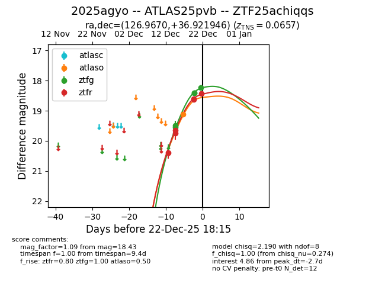
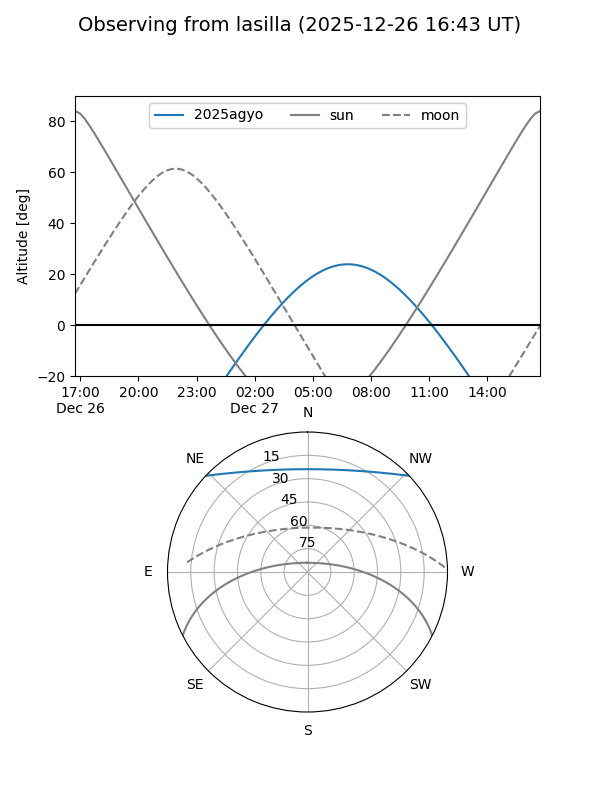
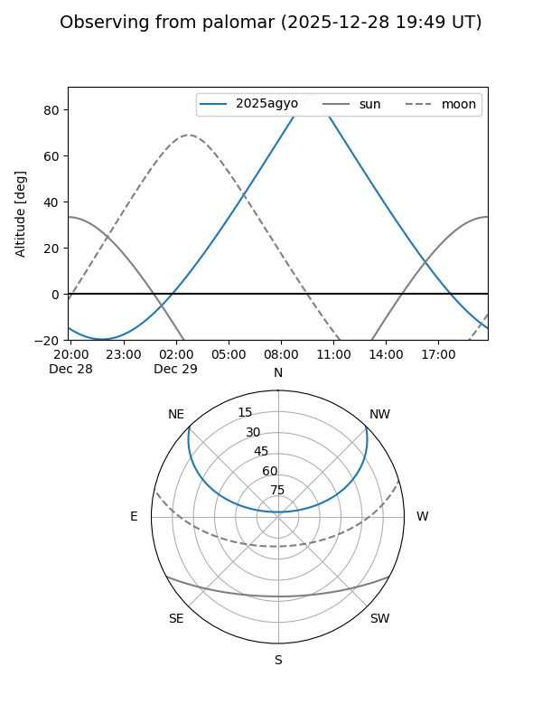
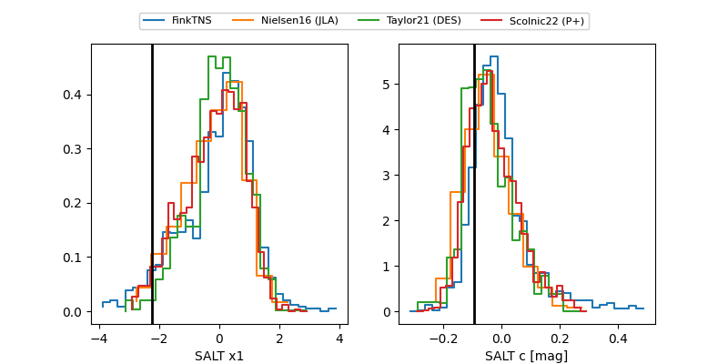

2025agyo
Target 2025agyo at 2025-12-29 10:06
Aliases and brokers:
FINK: fink-portal.org/ZTF25achiqqs
Lasair: lasair-ztf.lsst.ac.uk/objects/ZTF25achiqqs
ALeRCE: alerce.online/object/ZTF25achiqqs
TNS: wis-tns.org/object/2025agyo
YSE: ziggy.ucolick.org/yse/transient_detail/2025agyo
alt names
ZTF25achiqqs (ztf,fink_ztf)
2025agyo (tns,yse)
ATLAS25pvb (atlas)
Coordinates:
equatorial (ra, dec) = 126.9670,+36.92195
equatorial (HMS+DMS) = 08:27:52.07,+36:55:19.00
galactic (l, b) = (185.0704,+34.37005)
Flags:
confirmed ia
Photometry:
last atlasc=18.05, atlaso=18.42, ztfg=18.02, ztfr=18.13
3 atlasc, 3 atlaso, 7 ztfg, 9 ztfr detections
Lightcurve

Visibility


Additional plots
